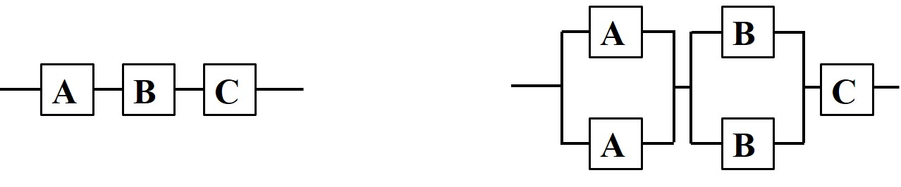
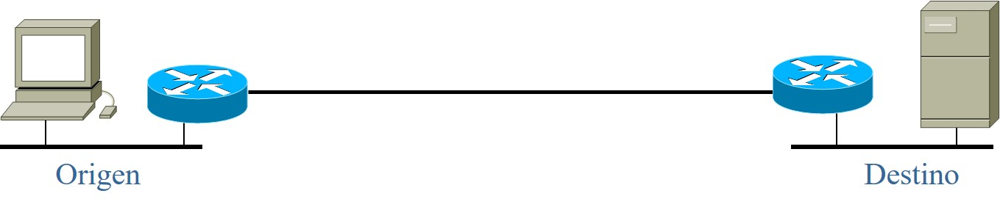

Capítulo 2 Requerimientos técnicos. Compromisos y restricciones
Durante la fase de visión y alcance se identificaron las necesidades de negocio, el entorno de trabajo y se empezó a reconocer el tipo de aplicaciones que soportarán los objetivos del proyecto. Para el diseño de la red, los requerimientos de negocio se traducen en requerimientos técnicos.
Como se mencionó en el capítulo anterior, los objetivos del proyecto deben ser SMART, por lo que los requerimientos técnicos deben ser cuantificables y especificarse en términos concretos. En este capítulo se introducirán brevemente algunos de los requerimientos técnicos encontrados más frecuentemente en redes de comunicaciones. Específicamente, se presentan los requerimientos de:
Escalabilidad
Desempeño
Administración
Adaptabilidad
Disponibilidad
Seguridad
Facilidad de uso
Costo-beneficio
Algunos de estos requerimientos son mutuamente exclusivos, por lo que se requiere de compromisos entre ellos. Estos compromisos deben estar claramente alineados con los objetivos del proyecto.
2.1 Escalabilidad
El requerimiento de escalabilidad (scalability) se refiere básicamente a la capacidad de crecimiento de la red y puede llegar a ser uno de los objetivos centrales para medianas y grandes empresas inmersas en una estrategia de adquisiciones, fusiones, y/o crecimiento acelerado.
En este contexto, “crecimiento” abarca varias dimensiones. Se debe discutir claramente con el cliente cuáles son sus planes a corto (un año), mediano (dos años) y largo plazo (cinco años) para agregar nuevos usuarios, equipos y aplicaciones de negocio. También deberá discutirse si se tienen planeados cambios en las políticas de operación (por ejemplo, comercio electrónico) y/o en las principales líneas de negocio.
Esto es muy importante pues escalar una red puede llegar a ser sumamente difícil si no se planea desde el principio. Por ejemplo, algunas tecnologías son inherentemente no escalables, como ocurre con redes planas basadas en equipos de conmutación y que utilizan protocolos que generan muchas tramas de difusión.
La escalabilidad será confrontada con el tiempo de vida promedio de las tecnologías en que se basa el diseño propuesto. Es común considerar que la infraestructura de base (cableado, enlaces) tiene un tiempo de vida útil de 10 a 15 años. Sin embargo, en los últimos años se ha observado un cambio dramático en la tasa de rotación de infraestructura.
A partir de finales del siglo XX se observó un tiempo de obsolescencia de la infraestructura de cableado de únicamente seis años, sobre todo en el núcleo de la red, debido a las continuas mejoras tecnológicas y a la reducción de costos en este rubro (en particular, en fibra óptica). Este tiempo de obsolescencia sigue siendo vigente en redes que no han desplegado fibra óptica monomodal.
Para los equipos de conmutación (enrutadores, conmutadores, concentradores), el tiempo de vida actual oscila entre los tres y los cinco años.
Otro aspecto que debe tomarse en consideración al evaluar la escalabilidad necesaria en la red, es que los paradigmas clásicos de dimensionamiento de redes están perdiendo fuerza. Tradicionalmente, la planeación de capacidad para redes empresariales se hacía basándose en una distribución Pareto: 80% del tráfico queda en la red local departamental y 20% va a otros lados. Este paradigma ha sido cada vez más cuestionado en la actualidad. De hecho, se observa que la relación se está invirtiendo debido, entre otros factores, a:
El uso creciente de granjas de servidores (clusters, blade servers) y de servidores de aplicaciones;
el modelo de hospedaje externo de servidores (hosting);
la concentración de información en infraestructura especializada (SANs, NAS);
la difusión de información corporativa en intranets;
el creciente modelo de comunicaciones inter-empresas (extranets).
2.2 Disponibilidad
La disponibilidad (availability) indica cuánto tiempo la red está en operación en un determinado intervalo de tiempo (año, mes, día, hora, …). Generalmente se representa como un porcentaje del período evaluado.
\[\text{Disponibilidad}=\frac{\text{Tiempo en operación}}{% \text{Período evaluado}}\]
De acuerdo a su disponibilidad, los sistemas pueden clasificarse de la siguiente manera:
| No administrado | 90% |
| Administrado | 99% |
| Bien administrado | 99.9% |
| Tolerante a fallos | 99.99% |
| Alta disponibilidad | 99.999% |
| Muy alta disponibilidad | 99.9999% |
| Ultra alta disponibilidad | 99.99999% |
La disponibilidad necesaria debe definirse con precisión, pues cada “9” adicional, si bien aumenta en un orden de magnitud la fiabilidad del sistema, puede resultar sumamente costoso. Para saber cuánto invertir en este requerimiento, debe partirse por evaluar el costo para la empresa de que una aplicación de misión crítica deje de operar.
Las aplicaciones de misión crítica son todos aquellos procesos en los que se basa el núcleo de negocio de la empresa. Un fallo en una aplicación crítica deja a la empresa sin poder operar. Un requerimiento de disponibilidad típico para aplicaciones de misión crítica es de 99.98%.
La disponibilidad se puede determinar más fácilmente a partir de los valores de tiempo medio entre fallos (mean time between failures, MTBF) y tiempo medio de reparación (mean time to repair, MTTR).
\[\text{Disponibilidad}= A = \frac{\texttt{MTBF}}{\texttt{MTBF}+ \texttt{MTTR}}\]
Se prefiere esta métrica pues puede ocurrir que muchas fallas de muy corta duración den un valor de disponibilidad adecuado aunque en la práctica no se pueda trabajar con el sistema.
MTBF y MTTR son cifras para componentes y equipos. Como la red da un servicio, algunos autores prefieren los términos MTBSO (Mean time between service outages) y MTTSR (Mean time to service repair).
Es muy importante considerar que los valores de MTBF y MTTR son valores promedio en los que puede haber una gran variabilidad. Esto es particularmente cierto para el MTTR, en el cual se engloban muchos factores muy variados como el tiempo en que se detecta la falla, el necesario para aislar el equipo, para repararlo, y el tiempo necesario para restablecer el equipo e integrarlo a la infraestructura de producción.
Para un equipo de red, un MTBF deseable es del orden de decenas de miles de horas. Para un sistema completo, es de miles de horas, pues la disponibilidad de un sistema depende de la manera en la que sus componentes están interconectados:
Figura 2.1: Disponibilidad de sistemas con componentes en serie y en paralelo
Dado que \(0\leq A_i\leq 1\), de la figura 2.1 se confirma que con un mayor número de dispositivos o sub-sistemas en serie, la disponibilidad disminuye (es decir, aumenta la probabilidad de fallos en el sistema). A mayor número de dispositivos –con la misma funcionalidad– en paralelo, la disponibilidad aumenta. Es evidente que el uso de equipos redundantes aumenta la disponibilidad del sistema.
Para sistemas similares que no están directamente relacionados entre sí, los MTBF (y en cierta medida, la disponibilidad) de cada uno suelen considerarse como variables aleatorias independientes idénticamente distribuidas.
Ejemplo 2.1 Considere una empresa que tiene \(N=500\) computadoras personales con un
MTBF de \(10,000\,\text{hr}\). El número de incidentes por fallos
esperado por día es de:
\[X = N\times\frac{t}{\texttt{MTBF}+\texttt{MTTR}}\approx N\times\frac{t}{\texttt{MTBF}}%
= 500\times \frac{8760}{365\times 10000}=1.2\,\text{fallos/dia}\] Tal
vez se justifique una persona dedicada a dar mantenimiento a las
computadoras. Si se adquirieran equipos con un MTBF de
\(40,000\,\text{hr}\), entonces se tendrían 9 fallos por mes.
2.3 Confiabilidad
La confiabilidad (reliability) se refiere a las características
aleatorias de los fallos. Se define como la probabilidad de que el
sistema no falle antes de \(t\) horas de operación y se especifica en
términos del MTBF de los componentes.
Frecuentemente se considera que las fallas obedecen a un proceso de Poisson, por lo que el intervalo entre fallos tiene una distribución exponencial. Por lo tanto,
\[R=e^{-\frac{t}{\texttt{MTBF}}}\]
Ejemplo 2.2 Considere un equipo con un \(\texttt{MTBF}=10,000\,\text{horas}\). Su
confiabilidad para un año será de \(R = 41.64\%\). Si el MTBFaumenta a
\(20,000\,\text{horas}\), la confiabilidad únicamente crece a
\(R =64.53\%\).
Como fue el caso para el requerimiento de disponibilidad, la confiabilidad de un sistema depende de la interconexión entre sus componentes. Para una topología en serie, la confiabilidad se calcula así: \[R_s = e^{-t\bigl(\frac{1}{\texttt{MTBF}_1}+\frac{1}{\texttt{MTBF}_2}% +\cdots+\frac{1}{\texttt{MTBF}_n}\bigr)},\] mientras que para un sistema con componentes similares en paralelo, la confiabilidad se determina por: \[R_p=1-(1-R_1)\times(1-R_2)\times \cdots\times (1-R_n).\]
Ejemplo 2.3 Considere un sistema con tres componentes en serie cuyos MTBF son
respectivamente de \(20\,k\), \(25\,k\) y \(30\,k\) horas. Para un año, la
confiabilidad del sistema es: \(R = 34\%\).
2.4 Desempeño
Los requerimientos de desempeño de la red (network performance) también llamados “prestaciones de la red”, se definen con base en un conjunto de métricas cuantitativas sobre el comportamiento de la red, como el ancho de banda, la utilización, el rendimiento, la carga ofrecida, la tasa de error, la eficiencia, el retardo y su variabilidad (jitter).
Es importante identificar las expectativas que el usuario tiene sobre el desempeño de la red. Estas expectativas están fuertemente ligadas a las características de la red existente y a los planes de crecimiento de la misma.
2.4.1 Ancho de banda
Técnicamente, el ancho de banda es una medida del rango de frecuencias que conforman una señal analógica (o la mayor parte de su potencia) y está medida en Hertz. En los sistemas digitales, representa el número de símbolos por segundo o baudios que pueden ser transmitidos por un sistema de comunicaciones.
Dependiendo de la técnica de codificación, cada baudio puede representar uno o más bits, por lo que el ancho de banda también se emplea informalmente como una medida de la capacidad del canal de comunicación. Esa es la definición que se seguirá en este documento: Es la cantidad nominal (o teórica) de información que puede ser transportada por unidad de tiempo. Generalmente se expresa en bits/s.
2.4.2 Utilización
Es una medida de la cantidad de tráfico transportada en relación con la capacidad total. En primera instancia se podría pensar que el objetivo de utilización debería ser cercano al 100% pero en realidad esto no es así:
En las redes informáticas los paquetes suelen llegar en ráfagas y se debe dejar un margen para poder absorber esas ráfagas sin que haya pérdidas.
En redes que tienen un control de acceso por contención (por ejemplo, ethernet), la eficiencia (ver más adelante) disminuye rápidamente conforme aumenta la utilización.
Los procesos de llegada y de salida de paquetes son procesos aleatorios. En la mayoría de los casos, la dinámica de estos procesos requiere que, para una tasa de pérdida determinada, el tamaño de los buffers (y por consiguiente, el tiempo de espera) aumente exponencialmente conforme la utilización se acerca al 100%.
Ejemplo 2.4 Un modelo de la teoría de colas muy común para evaluar métricas de desempeño en redes de conmutación de paquetes, es la cola \(M/M/1\) 6. La cola \(M/M/1\) supone que la llegada de los paquetes es un proceso de Poisson (el intervalo entre paquetes tiene una distribución aleatoria exponencial) y que la tasa de servicio (la longitud del paquete) también es exponencial.
En este modelo, la utilización es el cociente entre la tasa de llegadas y la tasa de servicio y se representa por \(\rho\). El valor esperado para el tamaño de la cola se calcula como:
\[E[N]=\frac{\rho}{1-\rho}\]
Suponga que cinco usuarios generan tráfico con una tasa media de 10 paquetes por segundo cada uno y que el tamaño medio de paquete es de 1,024 bits. Los cinco usuarios comparten un enlace E07. Modelando este escenario como una cola \(M/M/1\):
\[\begin{aligned} \rho = \frac{5\times 10\times 1,024}{64,000}&=0.8\\ E[N] = \frac{0.8}{0.2}&=4 \end{aligned}\]
El número medio de paquetes encolados es de cuatro. Sin embargo, si se agrega solamente un usuario más al sistema, entonces \(\rho= 0.96\) y \(E[N]= 24\).
Los parámetros típicos para dimensionar una red informática son los siguientes:
Enlaces punto a punto y redes con control de acceso arbitrado: \(U\approx 70\%\)
Redes ethernet: \(U\approx 37\%\)
Los mecanismos de contención utilizados en ethernet, y derivados de la red Aloha, hacen que cuando la red empieza a rebasar este valor, el número de colisiones para acceder al medio crezca demasiado. Sin embargo, se debe tener presente que esto no aplica a ethernet conmutado, la tecnología dominante en la actualidad. Si en el puerto de un conmutador ethernet se tiene conectado un solo equipo, se trata de un enlace punto a punto y la utilización puede crecer hasta el 70%.
2.4.3 Rendimiento
En este trabajo, rendimiento (throughput) se define como la cantidad de información transmitida sin error por unidad de tiempo. Idealmente, el rendimiento aumenta linealmente con la carga ofrecida a la red. Esto se cumple sólo hasta un cierto punto tras el cual se degrada debido a factores como la tasa de errores, la dinámica de protocolos, el desempeño de los equipos intermedios y el modo de acceso.
El rendimiento puede ser calculado para toda la red, para una trayectoria, para un enlace o para un dispositivo de conmutación. En este último caso, el rendimiento se define como la tasa a la que el dispositivo puede conmutar paquetes, y puede variar de acuerdo al tamaño medio del paquete. La tasa máxima de conmutación se conoce como wire speed y es igual a:
\[\text{Wire speed}=\frac{\text{Ancho de banda}}{\text{Tamaño de paquete}}\]
Ejemplo 2.5 Para una red 10baseT, considerando tramas de tamaño mínimo, la tasa máxima de conmutación de paquetes es: \[\frac{10\times 10^6}{(64+20)\times 8}=14,480\,\text{p/s},\] donde los 20 octetos en el denominador corresponden a 8 de preámbulo y 12 del intervalo entre tramas.
Si se hace el mismo cálculo para un tamaño de trama de 1,500 bytes, entonces el rendimiento sería de \(822\,\text{p/s}\).
Desde el punto de vista del usuario, la métrica de rendimiento de interés es la tasa de información percibida en la capa de aplicación del modelo de referencia para la interconexión de sistemas abiertos (OSI, Open Systems Interconnection). Esta métrica es informalmente conocida como goodput.
Por ejemplo, en una red de baja velocidad se podría eliminar cualquier mecanismo de compresión. En ese caso, tal vez el rendimiento a nivel enlace aumente pero ciertamente el goodput se vería penalizado. Un caso similar ocurriría si la mayoría de los paquetes que circulan por la red fueran retransmisiones debidas a algún equipo que no esté trabajando correctamente.
También conviene recordar que no todas las aplicaciones necesitan –o pueden generar– un goodput elevado. Considere, por ejemplo, una sesión interactiva de terminal virtual, sobre todo, con una interfaz de texto.
2.4.4 Tasa de error
Evidentemente, los datos recibidos deben ser iguales a los transmitidos. De no ser así, la trama debe ser emitida nuevamente, disminuyendo el rendimiento de la red. La tasa de error es una medida del número de errores detectados. En medios físicos y redes WAN generalmente se expresa en bits afectados (bit error rate) mientras que en redes LAN se habla de tasa de tramas afectadas (frame error rate).
Antiguamente la tasa de error en los medios físicos era relativamente elevada. Esto ha cambiado radicalmente en la actualidad, sobre todo con la aparición de la fibra óptica, aunque también ha habido mejoras en las demás tecnologías. Algunas fuentes típicas de error son la siguientes:
Interferencia electromagnética (cable no blindado);
picos de corriente (medios cableados);
factores ambientales (microondas y satélites);
impedancias no acopladas (redes locales);
fallas de equipo (todos los casos).
Dada la penetración de los sistemas digitales en la actualidad, llama la atención que en la lista anterior no se consideren errores de software en los equipos terminales y dispositivos de red. En realidad, este tipo de error suele detectarse rápidamente en las etapas de validación del equipo; es relativamente poco frecuente que un equipo en producción presente fallas de programación.
Algunas cifras típicas de tasa de error son las siguientes:
Alambre de cobre: \(BER\approx 10^{-6}\)
Fibra óptica: \(BER\approx 10^{-12}\)
Enlaces satelitales: \(BER\approx 10^{-5}\). La tasa de error de los enlaces satelitales depende en gran medida de la banda (frecuencia) que se utilice y de las condiciones atmosféricas. La cifra anterior no considera la corrección automática de errores por el receptor (forward error correction, FEC), una técnica muy popular basada en transmisión de información redundante, lo cual permite reducir sustancialmente la tasa efectiva de error.
Para redes LAN, una tasa de error considerada aceptable es detectar, en promedio, una trama errónea por cada \(10^6\) bytes transmitidos. Aunque se habla de tramas erróneas, la cifra se expresa en función del número de octetos para evitar el tener que tomar en cuenta el tamaño de las tramas.
En redes tipo ethernet, se deben detectar menos de 0.1% de tramas en colisión. En primera instancia, esta cifra puede parecer demasiado baja pues las colisiones son un fenómeno “natural” de competencia en este tipo de redes. Sin embargo, se debe recordar que la mayoría de las colisiones se presentan durante la transmisión del preámbulo, antes de iniciar propiamente la transmisión de una trama y por lo tanto, no son tomadas en cuenta.
2.4.5 Eficiencia
La eficiencia es una medida de la sobrecarga o trabajo extra necesario para la transmisión de información en relación con la capacidad total del medio. También puede representar la cantidad útil de información en relación con la cantidad transmitida. Se ve afectada directamente por las características de los protocolos utilizados: tamaño de los encabezados, acuses de recibo, paso de estafetas (token); etc.
Ejemplo 2.6 Del ejemplo 2.5 se obtuvo que en ethernet a \(10\,Mb/s\) se pueden enviar \(14,480\) tramas de \(64\) bytes. Considerando únicamente la sobrecarga del encabezado MAC, en la trama sólo hay \(64 - 18 = 46\) bytes de carga útil, por lo que la eficiencia es:
\[\mathcal{E} = \frac{46\times 14,480\times 8}{10\times 10^6}\times 100\%=53.20\%.\]
Si el tamaño de las tramas cambia a 1,500 bytes, la eficiencia aumenta a: \[\mathcal{E} = \frac{1,482\times 812\times 8}{10\times 10^6}\times 100\%=96.20\%.\]
Ejemplo 2.7 En transmisiones de voz sobre IP, cada paquete transporta un cierto
intervalo de muestras (típicamente, \(10\), \(20\) o \(40\,ms\)) cuyo tamaño
depende del tipo de códec utilizado. Los paquetes suelen contener
encabezados de tres protocolos que contribuyen en 40 bytes al tamaño
final del paquete: RTP(12 bytes), UDP(8 bytes) e IP(Ver. 4 sin
opciones: 20 bytes). Ignorando por ahora el encabezado MAC y suponiendo
un códec PCM a \(64\,kb/s\) (G.711), si el paquete transporta \(20\,ms\)
de información, su eficiencia es la siguiente:
Se generan \(1/20\,ms = 50\,\text{p/s}\). Cada paquete tiene su propio encabezado por lo que se genera una sobrecarga de \(50\times 40\times 8 =16\,kb/s\). El ancho de banda necesario para transportar la información es entonces de \(16\,kb/s + 64\,kb/s = 80\,kb/s\) y la eficiencia es: \[\mathcal{E}=\frac{64,000}{80,000}\times 100\%=80\%.\]
Es claro que una manera de aumentar la eficiencia es aumentando la carga útil (payload) por paquete para “prorratear” mejor el costo de los encabezados. Sin embargo, paquetes de mayor tamaño tienen una mayor probabilidad de error y –sobre todo en redes de baja velocidad– pueden introducir retardo y jitter en flujos concurrentes.
2.4.6 Retardo y variabilidad
Retardo (latencia) es el tiempo transcurrido entre la emisión de un
paquete y su llegada al extremo opuesto (retardo en una dirección), o
bien, el arribo de su respuesta (retardo de ida y vuelta, RTT). Afecta
a las aplicaciones interactivas: Estudios recientes indican que la
mayoría de los usuarios esperan que algo ocurra en la pantalla tras una
décima de segundo. La variabilidad en el retardo, el jitter, es un
fenómeno que afecta principalmente a las aplicaciones multimedia.
Tanto el retardo como el jitter dependen de factores como el nivel de congestión, la típica emisión en ráfagas de las aplicaciones tradicionales y el desempeño de los enrutadores (por ejemplo, durante la actualización de tablas de ruteo; tiempo de convergencia tras una falla; etc.).
Jitter
Se genera principalmente debido al tiempo de espera en las colas de los dispositivos de red. Como se ha señalado, el tiempo de espera aumenta exponencialmente con la utilización (en una disciplina de servicio FIFO).
Afecta a las aplicaciones multimedia pues las muestras transportadas por la red deben ser “liberadas” exactamente con las mismas características temporales (cadencia e intervalo entre muestras) con las que fueron tomadas. Una práctica común para compensar las variaciones sufridas en la red, es agregar un sello de tiempo a las muestras y utilizar un buffer de reproducción en el receptor en el que se almacenan (y retrasan) temporalmente los paquetes recibidos.
En principio, este buffer debe poder almacenar tantas muestras como para absorber la variabilidad más grande esperada, pero en aplicaciones interactivas no puede ser demasiado grande pues se pierde la sensación de continuidad necesaria en estos casos.
Cuando se desconocen los requerimientos reales de jitter, una práctica común es recomendar que éste no exceda el 2% del valor de latencia especificado.
Elementos de retardo
Los principales elementos de retardo en una red se muestran en la figura 2.2:
Figura 2.2: Principales elementos de retardo en una red
- Tiempo de procesamiento: \(t_{pr}\).
-
En los equipos terminales, está relacionado con el tratamiento del paquete en la pila de protocolos y en el mecanismo de manejo de interrupciones. Para sistemas de muy alto desempeño, se deben buscar implementaciones que minimicen el número de transferencias a memoria durante el procesamiento del paquete por los distintos procesos que intervienen en su manejo (zero copy stacks).
En los nodos de conmutación está relacionado con la arquitectura interna del dispositivo para seleccionar la interfaz de salida y llevar el paquete hacia ella. Un valor típico para equipos de no muy alto desempeño es de entre \(10\) y \(50\,\mu s\). Para algunas arquitecturas, este valor está en función del tamaño del paquete. El \(t_{pr}\) también puede incluir el tiempo medio de espera en los buffers del dispositivo.
- Tiempo de acceso al medio: \(t_a\).
-
Es el intervalo de espera para poder iniciar la transmisión y depende del protocolo de acceso al medio particular (contención, espera de autorización, de la ranura de tiempo, etc.).
- Tiempo de transmisión: \(t_t\).
-
También llamado de serialización, indica el tiempo requerido para “colocar” el paquete en el medio y es igual a la longitud del paquete dividida entre la velocidad de transmisión.
- Tiempo de propagación: \(t_p\).
-
Es el tiempo que se requiere para propagar la energía (en cualquier formato) de un punto a otro. Se calcula como la distancia del medio dividida entre la velocidad de propagación. La velocidad de propagación de las ondas electromagnéticas es la velocidad de la luz: \(c \approx 3\times 10^8\,m/s\)8. La velocidad de propagación tanto en cobre como en fibra óptica suele ser tomada como \(\frac{2}{3} c\), aunque los valores más exactos que se tienen hasta el año de 2002 son de \(224,844\,km/s\) en un alambre de cobre y de \(194,865\,km/s\) en una fibra óptica multimodal.
Ejemplo 2.8 Considere la red de la figura 2.2 con las siguientes características:
La red LAN en el origen es 10BaseT;
la red LAN en el destino es 100BaseT;
las entidades se encuentran a \(900\,km\) de distancia y están interconectadas con un enlace \(E0\);
el origen envía una trama de \(1\,kB\) y espera el acuse de recibo de \(64\) bytes.
Para calcular el RTT, se tomarán en cuenta las siguientes
consideraciones:
El tiempo de procesamiento en el origen y el destino se ignora;
el retardo de propagación en las redes locales se ignora;
el tiempo de procesamiento en los enrutadores es de \(10\,\mu s\);
\(t_{to},~t_{td}~\text{y}~t_{tw}\) son los tiempos de serialización de las dos tramas en el origen, en el destino y en el enlace WAN, respectivamente.
\[\begin{aligned} t_{to} &=\frac{(1,024+64)\times 8}{10^6}=0.87\,ms\\ t_{td} &=\frac{(1,024+64)\times 8}{10^7}=0.087\,ms\\ t_{tw} &=\frac{(1,024+64)\times 8}{64,000}=136\,ms\\ t_{pr} &=0.04\,ms\\ t_p&=2\times\frac{900}{240,000}=7.5\,ms\\ \texttt{RTT}&= t_{to}+t_{td}+t_{tw}+t_{pr}+t_p=144.49\,ms \end{aligned}\]
El principal elemento de retardo es el tiempo de serialización en el enlace WAN. Este es el cuello de botella. Se dice que esta red está limitada en ancho de banda.
Ejemplo 2.9 Se retoman las condiciones del ejemplo anterior, pero el enlace de fibra óptica se sustituye por un enlace satelital:
Figura 2.3: Principales elementos de retardo en una red satelital
Todos los valores quedan igual excepto el retardo de propagación. El
valor actualizado de \(t_p\). y el RTT resultante son de:
\[\begin{aligned}
t_p&=2\times\frac{2\times 36,000}{300,000}=480\,ms\\
\texttt{RTT}&= t_{to}+t_{td}+t_{tw}+t_{pr}+t_p=616.99\,ms
\end{aligned}\]
El principal elemento de retardo es el retardo de propagación en el
enlace WAN. Esta red está limitada en latencia. Hay muy poco que la tecnología pueda hacer para reducir el RTT en este tipo de red.
Caso de estudio: Evaluación de retardo
Los ejemplos anteriores proporcionan un límite inferior del retardo de ida y vuelta apreciado entre dos sitios separados una distancia de \(900\,km\). En el presente caso se muestra un estudio real sobre mediciones del retardo observado al consultar un servidor de base de datos a través de distintas redes: LAN, WAN terrestre, satelital dedicado y satelital compartido.
Las mediciones se hacen con un analizador de protocolos del lado del cliente en una configuración como la mostrada en la figura 2.4.
Figura 2.4: Configuración recomendada para evaluar el retardo de ida y vuelta
Como puede observarse, para este tipo de estudios el RTT se mide en el
extremo del cliente (el que iniciará la solicitud). Es importante
activar filtros en el analizador de manera que solamente se observe el
tráfico entre los equipos involucrados.
Ambiente de red local
En la primera evaluación, se colocan cliente y servidor en la misma red local. Esto permite configurar y probar la maqueta así como obtener un límite inferior para el tiempo de respuesta. La conversación capturada se muestra en la tabla siguiente. La columna del intervalo de tiempo despliega la diferencia entre tramas consecutivas.
| No. | Tamaño | Tiempo | Dirección | Banderas | Contenido |
|---|---|---|---|---|---|
| 1 | 76 | 0.000 | \(C\rightarrow S\) | .AP... | Binario |
| 2 | 74 | 0.010 | \(S\rightarrow C\) | .AP... | Binario |
| SELECT COUNT (COD CLIENTE) FROM (MG CLIENTES) WHERE (COD CLIENTE) = x | |||||
| 4 | 139 | 0.000 | \(S\rightarrow C\) | .AP... | Binario |
| 5 | 79 | 0.000 | \(C\rightarrow S\) | .AP... | Binario |
| 6 | 140 | 0.000 | \(S\rightarrow C\) | .AP... | RA-01403 no data found |
Si bien desde el punto de vista de la aplicación solamente se está realizando una operación sencilla, seis paquetes han sido intercambiados en la consulta.
Con el primer paquete el cliente envía información de control al servidor; \(10\,ms\) después, el servidor responde. Este retraso puede deberse, por ejemplo, al cambio de contexto en el equipo destino para activar la tarea correspondiente del manejador de base de datos. En el paquete 3, el cliente está enviando los datos correspondientes a la consulta; muy probablemente los paquetes 4 y 5 son acuses de recibo del protocolo de control. Finalmente, la respuesta llega en el paquete 6.
Los intervalos entre todos los demás paquetes son demasiado pequeños para ser capturados por el analizador de protocolos. Toda la transacción toma alrededor de \(10\,ms\).
Ambiente WAN terrestre
Esta vez, el servidor se encuentra a \(900\,km\) de distancia del cliente y los dos sitios se interconectan por medio de un enlace \(E0\) terrestre basado en fibra óptica. Los resultados son los siguientes:
| No. | Tamaño | Tiempo | Dirección | Banderas | Contenido |
|---|---|---|---|---|---|
| 1 | 76 | 0.000 | \(C\rightarrow S\) | .AP... | Binario |
| 2 | 74 | 0.090 | \(S\rightarrow C\) | .AP... | Binario |
| SELECT COUNT (COD CLIENTE) FROM (MG CLIENTES) WHERE (COD CLIENTE) = x | |||||
| 4 | 139 | 0.100 | \(S\rightarrow C\) | .AP... | Binario |
| 5 | 79 | 0.000 | \(C\rightarrow S\) | .AP... | Binario |
| 6 | 140 | 0.050 | \(S\rightarrow C\) | .AP... | RA-01403 no data found |
Se siguen generando seis paquetes en este intercambio, pero los
intervalos entre los paquetes emitidos por el cliente y las respuestas
del servidor son considerablemente mayores. Por supuesto, la diferencia
se atribuye, sobre todo, al retardo de propagación en la red WAN. Toda
la transacción toma ahora alrededor de \(250\,ms\).
Ambiente WAN satelital dedicado
Para este escenario, cliente y servidor se interconectan a través de un enlace satelital SCPC (Single Channel Per Carrier) dedicado únicamente a la comunicación entre los dos sitios. Las tramas observadas en este caso son:
| No. | Tamaño | Tiempo | Dirección | Banderas | Contenido |
|---|---|---|---|---|---|
| 1 | 76 | 0.000 | \(C\rightarrow S\) | .AP... | Binario |
| 2 | 76 | 0.800 | \(C\rightarrow S\) | .AP... | Binario |
| 3 | 74 | 0.850 | \(S\rightarrow C\) | .AP... | Binario |
| SELECT COUNT (COD CLIENTE) FROM (MG CLIENTES) WHERE (COD CLIENTE) = x | |||||
| 5 | 64 | 190 | \(S\rightarrow C\) | .A... | Vacío |
| 6 | 139 | 0.360 | \(S\rightarrow C\) | .AP... | Binario |
| 7 | 79 | 0.000 | \(C\rightarrow S\) | .AP... | Binario |
| 8 | 140 | 0.520 | \(S\rightarrow C\) | .AP... | RA-01403 no data found |
La diferencia de tiempos ya es muy notoria. Una consulta que llevó
solamente \(10\,ms\) sobre una red de área local y \(250\,ms\) sobre un
enlace terrestre, ahora tarda \(2.730\,s\) a través de este enlace. Estos
tiempos ya son más que suficientes para que el usuario note una
diferencia.
Hay dos paquetes de más. El segundo paquete transmitido de la fuente al destino \(800\,ms\) después del primero es muy probablemente una retransmisión del primero al terminar el tiempo de espera de la respuesta. El quinto paquete es un acuse de recibo del paquete así duplicado.
El principal elemento de retardo en este escenario es el retardo de propagación a través del enlace satelital. Un aumento en el ancho de banda del enlace, no tendrá ningún impacto apreciable en el retardo percibido.
Considere ahora el escenario “normal” en el que se realizan varias consultas para obtener la información con la que llena una sola pantalla. Suponiendo que se requieran únicamente tres consultas y que la respuesta a las mismas no sea muy grande, se requiere de casi 9 segundos ¡para llenar una sola pantalla de información!
Ambiente WAN satelital compartido
En este escenario, la conexión cliente-servidor es TDMA (Time Division
Multiple Access) compartido. Antes de poder enviar información, hay que
solicitar y esperar la asignación de una ranura de tiempo, lo cual
introduce retardos variables. Las tramas observadas en este escenario
son:
| No. | Tamaño | Tiempo | Dirección | Banderas | Contenido |
|---|---|---|---|---|---|
| 1 | 76 | 0.000 | \(C\rightarrow S\) | .AP... | Binario |
| 2 | 74 | 0.608 | \(S\rightarrow C\) | .AP... | Binario |
| SELECT COUNT (COD CLIENTE) FROM (MG CLIENTES) WHERE (COD CLIENTE) = x | |||||
| 4 | 58 | 1.887 | \(S\rightarrow C\) | .A... | Vacío |
| 5 | 139 | 0.011 | \(S\rightarrow C\) | .AP... | Binario |
| 6 | 79 | 0.000 | \(C\rightarrow S\) | .AP... | Binario |
| 7 | 140 | 0.783 | \(S\rightarrow C\) | .AP... | RA-01403 no data found |
Efectivamente, hay una variabilidad mayor en las diferencias de
retardo observadas. El cuarto paquete, con un retardo diferencial de
\(1.887\,s\), es muy probablemente una réplica del segundo paquete enviado
por el servidor dado que el tercer paquete se ha retrasado demasiado
esperando el acceso al canal. El retardo total observado es de
\(3.29\,s\).
También es interesante observar algunas gráficas sobre los retardos observados en los tres escenarios.
Figura 2.5: Retardos observados en los enlaces (a) de fibra óptica; (b) satelital dedicado; (c) satelital compartido
En la figura 2.5 se muestra cómo los retardos en cualquiera de los tres enlaces pueden incrementarse considerablemente con respecto al retardo mínimo teórico, o incluso con respecto al retardo promedio, dependiendo del porcentaje de uso del ancho de banda en un instante cualquiera. Recuerde que el retardo mínimo teórico en el enlace terrestre es de \(144\,ms\) y en la primer gráfica de la figura se observa cómo los picos de retardo pueden alcanzar los \(2\,s\) con relativa facilidad, y en casos extremos pueden llegar a más de \(7\,s\).
Se logra percibir una variabilidad en el retraso a lo largo del tiempo, que puede coincidir con las actividades durante la jornada laboral.
En los datos obtenidos del canal satelital dedicado (segunda gráfica de la figura 2.5), se muestra un retardo medio mayor que en el enlace terrestre debido a la latencia. También se alcanza a distinguir una mayor variabilidad, pero se considera razonable.
Los datos recabados para el enlace satelital compartido (tercer gráfica de la figura @ref[fig:delay3e)) muestran que el retardo medio es mucho mayor, pero lo que es más evidente es su enorme variabilidad a lo largo del periodo evaluado. En este tipo de enlaces es muy difícil ofrecer servicios interactivos y francamente improbable servicios de tiempo real.
2.5 Seguridad
La seguridad es uno de los aspectos más importantes en el diseño de la red, sobre todo si se contempla que ésta tenga acceso a Internet o a Extranets y debe ser tomada en consideración desde las primeras fases de diseño. El objetivo es buscar garantías de que el diseño ofrece alguna protección contra pérdida o daño de datos y recursos. Los incidentes de seguridad no deben afectar la capacidad de operación de las empresas.
Los objetivos de seguridad pueden entrar en conflicto con otros requerimientos como costo, facilidad de uso, redundancia y escalabilidad. Considérese, por ejemplo, el caso en el que toda la información debe pasar por un único punto para ser cifrada/descifrada, lo que puede provocar cuellos de botella y representa un punto de falla.
Cuando se desea aplicar una política eficaz de seguridad, se debe involucrar profundamente a los empleados. Estudios recientes indican que entre los principales problemas de seguridad en las empresas destacan los virus introducidos por empleados al instalar software indebido, los errores humanos, y los actos de vandalismo por empleados descontentos. El tema de seguridad se estudiará con mayor detalle en el capítulo \[c:dislog\].
2.6 Administración
Otro elemento que debe considerarse desde las primeras etapas de diseño es la administración de la red. Como se presenta en el capítulo 5, una red bien administrada trae grandes beneficios para la organización. Si el cliente ya cuenta con políticas de administración, puede conocer con precisión cuáles son sus requerimientos de administración. En caso contrario, la terminología propuesta por el modelo OSI puede servir como punto de entrada para tratar de identificar sus necesidades.
El modelo de OSI divide el problema de gestión en cinco subsistemas, los cuales se presentan a continuación en el orden en el que típicamente son atendidos por las empresas:
- Gestión de fallas.
-
Tiene por objetivo detectar, aislar y corregir problemas, reportarlos y darles seguimiento.
- Gestión de configuración.
-
Orientada a controlar, identificar, colectar información y documentar los objetos administrados (hardware, software, cuentas de usuarios, etc.).
- Gestión de desempeño.
-
Su función es satisfacer los acuerdos de nivel de servicio (Service Level Agreement,
SLA) de manera eficiente, y prever planes de expansión. - Gestión de seguridad.
-
Busca monitorear y evaluar las políticas de seguridad, administrar llaves y contraseñas, etc.
- Gestión de la contabilidad.
-
Este subsistema pretende identificar quién utiliza los recursos, cuánto y para qué. Útil también para planear cambios de capacidad.
2.7 Facilidad de uso
Este requerimiento está muy relacionado con los requerimientos de administración y depende de la experiencia del personal responsable de la red y de los usuarios. Busca simplificar en lo posible que la red sea transparente al usuario final a través de mecanismos como servidores de configuración automática (por ejemplo, DHCP), políticas de asignación de nombres, sistemas de seguridad basados en biometría, etc.
2.8 Adaptabilidad
Un buen diseño de red debe facilitar la adaptación a nuevas tecnologías y cambios en la operación. La red es una entidad inmersa en un ambiente de continuas transformaciones. Durante el análisis de la red, debe quedar claro si no se contemplan cambios en el corto y mediano plazo en aspectos como:
Protocolos de red;
topologías de interconexión;
prácticas de negocio;
flujo de datos, patrones de tráfico;
requerimientos de calidad de servicio.
La mejor recomendación es seguir un diseño modular y basado en estándares. Deben evitarse soluciones novedosas basadas en equipos propietarios que no han sido probados lo suficiente, o de proveedores cuya solvencia no esté garantizada.
2.9 Costo-beneficio
Es más un requerimiento de negocios que técnico, pero está muy relacionado con las decisiones tomadas para los requerimientos técnicos. Por ejemplo, si la disponibilidad es prioritaria, será necesario invertir en equipos altamente fiables y proporcionar cierto nivel de redundancia en la red. En el capítulo 5 se presentarán algunas de las métricas que se utilizan para evaluar la factibilidad de un proyecto de TI.
El objetivo del diseño debe ser transportar la máxima cantidad de información satisfaciendo los requerimientos identificados, a un costo financiero dado. El costo financiero incluye tanto el costo de los equipos como los costos recurrentes de operación (pago de licencias, renta de enlaces, etc.).
En muchas ocasiones, el mayor costo operativo de la red ha sido la renta de enlaces WAN con circuitos privados, por lo que los primeros esfuerzos para maximizar el costo/beneficio se concentrarán en esa dirección. Por ejemplo, es posible utilizar ingeniería de tráfico y enrutamiento con restricciones para minimizar el tráfico que circula por estos enlaces. También se pueden combinar servicios de voz y datos en un mismo enlace, implementando mecanismos de QoS si es necesario.
Otro costo muy elevado en la operación de la red suele ser la capacitación, entrenamiento y nómina del personal involucrado en su gestión. Estos costos pueden reducirse proporcionando un diseño claro y modular de la red, y simplificando y automatizando las tareas de configuración y administración de los equipos.
2.10 Conflictos entre requerimientos
Como se ha mencionado, algunos de los requerimientos técnicos entran en conflicto entre sí. Para resolver estos conflictos, es importante definir con el cliente cuál el requerimiento más relevante y hacerlo un elemento central del diseño. De manera similar, se deben asignar pesos a los otros requerimientos en función de los criterios del cliente.
A veces la asignación de prioridades es mucho más compleja pues diferentes áreas dentro de la misma organización pueden tener distintas prioridades; en cualquier caso, es necesario documentarlas y tratar de establecer compromisos entre ellas.
2.11 Otras métricas relevantes
Como se ha mencionado, las métricas anteriores permiten los objetivos de la red en requerimientos técnicos específicos y cuantificables. Una vez desplegada la red, algunos de estos requerimientos, en particular los de desempeño, se monitorean constantemente para asegurar que la red opera dentro de los parámetros deseables, o si es necesario hacer un nuevo rediseño de la red.
Durante la operación de la red también existen otras métricas sumamente relevantes que están íntimamente relacionadas con una gestión de la red y que tienen un impacto directo en su disponibilidad. El IT Process Institute realizó un estudio junto con varias univresidades de Estados Unidos e identificó estas métricas como las que distinguen a las empresas con un gran desempeño, un desempeño mediocre y un desempeño deficiente en la provisión de servicios de TI. Estas métricas son:
- Mean Time To Repair.
-
80% de las fallas en TI son debidas a algún cambio (en configuraciones, parámetros, actualización de software, protocolos, etc.) y el 80% del MTTR en se invierte en detectar qué fue lo que se cambió.
Una organización bien administrada anticipa, documenta los cambios y analiza su impacto. Una organización mal administrada, no los documenta y cuando se presenta alguna falla en la red, en vez de analizar primero qué se ha modificado, empiezan por reinicializar servidores y equipos de red.
En fallos menores los tres tipos de organización resuelven el problema en tiempos similares, pero cuando el fallo es mayor, las empresas bien administradas tardan minutos en corregir el problema, mientras que las de bajo desempeño, pueden tardar horas y hasta días en resolverlo9.
- First Fix Rate.
-
Esta métrica mide el porcentaje de incidentes que se resuelven correctamente en el primer intento. Las empresas de alto desempeño resuelven el 90% de los incidentes al primer intento, las de medio, el 80%, y las de bajo desempeño, tan sólo el 50%.
El principal problema con estas últimas es que los fallos no se trabajan sistemáticamente y no se documentan en una base de datos que pudiera ser consultada cuando se presenta una falla. En cambio, en las empresas de alto desempeño se ha desarrollado una cultura de causalidad y pueden regresar a operaciones mucho más rápidamente, aumentando así la disponibilidad de la red.
- Change Success Rate.
-
Relacionada con las dos anteriores, esta métrica indica el porcentaje de cambios que no generan incidencias ni requieren de intervenciones posteriores. En las empresas bien administradas se reporta una tasa de 95%; en las de medio desempeño, de 80% y en las de bajo desempeño, de 70%.
Merece la pena resaltar que las empresas de alto desempeño son capaces de realizar diez veces más cambios sin que ésto afecte a la red, que las de medio y bajo desempeño.
- Server to administrator rate
-
Todo lo anterior conlleva a que una empresa bien administrada, que documenta cambios y sigue las mejores prácticas para gestionar la red, requiere de mucho menos capital humano para administrar la red. En el estudio citado, se reporta que en las empresas de alto desempeño un administrador puede gestionar hasta 125 servidores (y equipos de red), mientras que en las de medio y bajo desempeño, esta cifra se reduce a 25.
2.12 Problemas
Problema 2.1 En el dimensionamiento de una red, tradicionalmente se consideraba el principio de localidad que sigue una distribución Pareto: 80% del tráfico generado en un determinado segmento (o subred), se mantiene en ese segmento y sólo el 20% restante debe ser encaminado a otros segmentos (o subredes). ¿Por qué hoy se cuestiona la validez de este principio?
Problema 2.2 De acuerdo a la ley de Moore, la capacidad de procesamiento de los equipos electrónicos se duplica cada 18 meses. ¿De qué manera esta ley puede afectar el análisis de requerimientos para diseñar una red de comunicaciones?
Problema 2.3 Defina disponibilidad y confiabilidad en términos de MTBF y MTTR.
Problema 2.4 ¿Cuáles son los principales elementos que influyen en determinar un valor de MTTR para un sistema?
Problema 2.5 ¿Cuál es la disponibilidad de un equipo de red que anuncia un MTBF de \(6,000\,hr\) y se supone que el proveedor garantiza
un MTTR de \(4\,hr\)?
Problema 2.6 En una red telefónica pública, el objetivo de disponibilidad (sin contar la red de acceso), es de \(99.999\%\) (“the five nines”).
¿A cuántos minutos de fallos al año corresponde este valor?
Para la red de acceso, el objetivo es de \(99.95\%\) y el compromiso es de reparar un fallo en cuatro horas. ¿Cuántos fallos un
MTTRde \(4\,hr\)?
Problema 2.7 Cierto sistema está compuesto por tres elementos \(A, B, C\) dispuestos como se muestra en la parte izquierda de la figura. Sus MTBFson de \(5,000\), \(10,000\) y \(15,000\) horas. Por razones de logística, el MTTR de los tres es de 24 horas.
¿Cuál es la disponibilidad del sistema? Aproxime a seis cifras.
¿Cuál es la disponibilidad si el sistema se modifica con la distribución mostrada en la parte derecha de la figura?

Problema 2.8 Cierta empresa ha estimado que un minuto de caída en su red le representa una pérdida de \(\$500.00\). ¿Cuánto dinero pierde al año si:
La disponibilidad es de \(99.9\%\)?
La disponibilidad es de \(99.99\%\)?
¿Cuál es la disponibilidad que debe tener si no puede perder más de \(\$30,000.00\) al año?
Problema 2.9 ¿Qué es una aplicación de misión crítica? ¿Cuál es un requerimiento típico de disponibilidad para estas aplicaciones?
Problema 2.10
¿Qué tipo de fallos se toman en cuenta al estimar la confiabilidad de un PBX?
¿La disponibilidad de 99.999%, se refiere a: \((i)~\) El servicio residencial; \((ii)~\) El servicio comercial; \((iii)~\) El servicio de larga distancia; \((iv)~\) Las líneas troncales; \((v)~\) El conmutador en la central;\((vi)~\) todo?
Problema 2.11 Calcule la ocupación promedio del área de
almacenamiento temporal de un multiplexor estadístico modelado como una cola M/M/1 para los siguientes casos:
Diez terminales conectadas. Cada una genera, en promedio, paquetes con longitud de \(960\,bits\) con distribución exponencial cada \(8\,s\). La línea de salida es de \(2,400\,b/s.\)
La generación de paquetes cambia a un paquete cada \(5\,s\) en promedio.
Repita el punto (a) conectando 16 terminales.
Problema 2.12 Si se aumenta la capacidad de almacenamiento de los equipos de enrutamiento y conmutación, puede aumentarse el throughput de la red. ¿Qué consecuencias tendría este razonamiento?
Problema 2.13 Un sistema satelital geoestacionario con una tasa de transferencia de \(64\,kb/s\) se usa para enviar mensajes de 512 bytes. Suponiendo que no hay errores e ignorando encabezados, ¿cuál es el máximo throughput si se utilizan ventas de control de flujo de:
1 paquete
15 paquetes
127 paquetes
Problema 2.14 Para un enrutador que es capaz de conmutar paquetes a máxima velocidad (wire-speed) en sus 30 puertos \(10Base\,T\).
¿Cuál es su velocidad de conmutación en paquetes/s si el tamaño de los paquetes es de \(64\) bytes? (No olvide considerar el preámbulo –8 bytes– y la separación entre tramas –12 bytes)
¿Si los paquetes son de \(1,500\) bytes?
Problema 2.15 Para un switch FastEthernet,
¿Cuál es el throughput máximo en paquetes/s considerando un tamaño de paquete de \(1,518\) bytes?
¿Cuál es la eficiencia del enlace de salida si las tramas son enviadas a wire-speed?
Problema 2.16 ¿De qué manera el tamaño del paquete (MSS) afecta la eficiencia de la red?
- A menor tamaño, más paquetes circulan en la red, por lo que aumenta la eficiencia.
- A mayor tamaño, aumenta el ancho de banda utilizado, por lo que aumenta la eficiencia.
- A menor tamaño, menor es la carga útil, por lo que disminuye la eficiencia.
- A mayor tamaño, mayor inequidad, por lo que disminuye la eficiencia. |
Problema 2.17 Mencione dos razones por las que es deseable
limitar el tamaño de las colas en los equipos de interconexión en redes
TCP/IP.
Problema 2.18
Considere una aplicación que transmite voz sobre IP. La frecuencia máxima de la señal se corta a \(4\,kHz\) y es digitalizada utilizando PCM con 8 bits por muestra. Cada paquete contiene \(30\,ms\) de audio y es transmitido con RTP/UDP/IP (= 40 bytes de encabezado).
- ¿Cuál es la carga útil de los paquetes?
- ¿Cuál es la eficiencia de la transmisión?
- ¿Cuál es el ancho de banda requerido? |
Si la aplicación utiliza ahora un códec \(G.723.1\) (\(6.4\,kb/s\)),
- ¿Cuál es la carga útil de los paquetes?
- ¿Cuál es la eficiencia de la transmisión?
- ¿Cuál es el ancho de banda requerido?
Problema 2.19 Al medir en un analizador de protocolos el flujo de una conversación VoIP que utiliza RTP/UDP/IP (40 bytes de encabezado), se observa que consume un ancho de banda de \(40\,kb/s\) y que genera 100 paquetes por segundo.
¿Cuál es la tasa del códec?
¿Cuál es la eficiencia?
Problema 2.20 Llene en la siguiente tabla el ancho de banda requerido en cada caso
| IPv4 | IPv4 | IPv6 | IPv6 | |
| 25ms | 40ms | 25ms | 40ms | |
| G.726 (32kb/s) | ||||
| G.723 (6.4kb/s) | ||||
Problema 2.21
Encuentre el retardo de ida y vuelta mínimo para la red que se muestra en la figura sabiendo que:
- La tecnología de red local es FastEthernet en ambos extremos;
- el enlace WAN es de \(256\,kb/s\) y cubre una distancia de \(1,000\,km\);
- el retardo de conmutación es de \(10\,\mu s\);
- no hay congestión en ninguno de los segmentos indicados, se envía una trama de \(2\,kB\) al destino y éste responde con un acuse de recibo de 64 bytes.
¿Esta red está limitada en ancho de banda o en latencia? Explique.
 ```
Problema 2.22 ¿Cuáles son los pasos a seguir para analizar la latencia de un enlace?
Problema 2.23 Se desea transmitir un archivo de \(512\,kB\) entre dos ciudades separadas \(1,000\,km\) a través de i) un enlace E1 (\(2.048\,Mb/s\)) y ii) un enlace de \(1.12\,Gb/s\).
¿Cuál es el retardo de propagación en cada caso?
¿Cuál es el retardo de transmisión en cada caso?
¿Cuál de las dos redes está limitada en latencia? Explique.
Suponga que se tienen cuatro enlaces E1 entre las dos ciudades y que se transmite en paralelo una cuarta parte del archivo por cada enlace. ¿En cuánto tiempo se transmite todo el archivo en este caso?
Problema 2.24 Una imagen con resolución de \(640\times 480\) y 3 bytes por píxel debe ser transmitida entre dos puntos separados a \(250\,km\). Antes de su transmisión, la imagen se procesa por un compresor que reduce su tamaño, en promedio, 10:1. Se utiliza UDP/IPv4 (28 bytes) como medio de transporte, en paquetes de \(1\,500\) bytes y se transmiten todos los paquetes uno tras otro (no hay problemas de control de flujo) ¿cuánto tiempo tarda en transmitirse la imagen en:
POTS a 56 kb/s
Cable a 512 kb/s
Un enlace a 2 Mb/s?
Problema 2.25 Derive y explique el factor \(a\) que relaciona: \(V\), la capacidad del enlace; \(L\), la distancia recorrida; \(b\), el tamaño medio del paquete; y \(k\), una constante del tiempo de propagación en un kilómetro. ¿Cuál es el valor del factor en una LAN? ¿En un enlace de \(1\,Gb/s\) de \(1,000\,km\)?
Problema 2.26 Se envía información con un protocolo de ventanas deslizantes por un enlace de \(622\,Mb/s\). El tamaño de la ventana de transmisión es de \(24\,kB\) y la distancia entre transmisor y receptor es de \(1,000\,km\). La velocidad de propagación en el medio es de \(200,000\,km/s\).
¿Cuál es el retardo de propagación?
¿Cuál es el retardo de transmisión?
¿Cuál es el throughput maximo (en Mb/s)?
¿Cuál es la eficiencia del enlace?